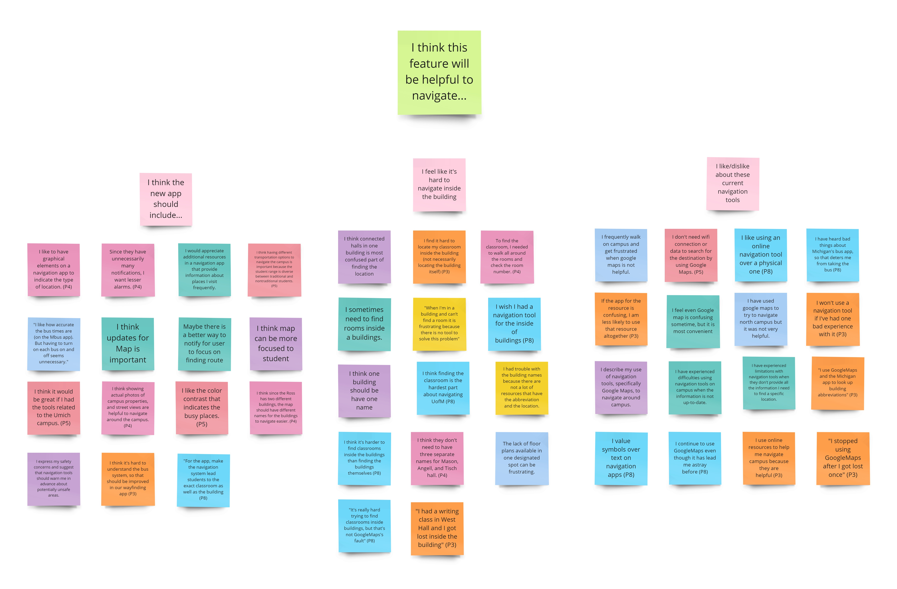

Student Life UX Research
Student Research for Creating a new Wayfinding Tool to Navigate University of Michigan – Ann Arbor
The University of Michigan wants to create a new student wayfinding tool. Instead of creating a tool by copying features of other devices, we decided to research the students' real-life experiences.
Project Info
My Role
Wireframing, Prototyping
Duration
01 Jan 2023 ~ 26 Mar 2023
Research Methods
Interviews Affinity Diagram Personas Storyboard Task-analysis Diagram
Project Background
This research's primary purpose is needs assessment and usability evaluation. For this project, we tried to understand the most prominent challenges students face in finding what they need (e.g., classes, services, food) on campus since our bigger purpose is to create a new wayfinding tool that is easier to use.
Research Process
-
Interviews & Analysis
We chose our target audiences as students who are current students of the UofM and need to become more familiar with the campus. Since our research question concentrates on the student’s experiences to understand their pain points of them for the improvement of tools, we decided to focus on the currently enrolled students who did not have a chance to visit campus a lot of time. After we decided on our target group for an interview, we devised a set of interview questions and met with them to conduct the interviews. After discussions, we analyzed our interview by finding and creating an affinity diagram that let us categorize the same thoughts or experiences of our interviewees. The affinity diagram helps us understand students' two major pain points while using the navigating tools.What We Learned from Interviews
A. Navigating inside the building is too hard since there are no helpful resources. B. Existing apps for the bus system need to be more accurate, making students feel anxious.  -
Surveys & Analysis
After conducting and analyzing our interviews, we surveyed to learn what students want from a wayfinding app and to what extent existing navigation tools are successful and failed. So, we devised a set of survey questions to ask what features currently need to be improved for navigating campus, whether existing tools are helpful, and what is the hardest part about navigating campus or where you have gotten lost on campus. From our survey, most students told us that navigating inside the buildings is the most complex and that a better resource needs to exist. -
Deliverables
Based on our findings from interviews and surveys, we created the deliverables to articulate the unique challenges students face while navigating campus. Through these various deliverables, we can show our target audience an improved product version to provide a better understanding of how the product should be changed.- Persona #1: Commuting Newcomer A current UofM student looking for a tool has combined resources for the bus system and navigation for the inside of the building.
-
Persona #2: Ambitious Prospective Student A high school student who got into UofM is looking for an accurate resource to navigate herself on campus.

- Storyboard Current UofM student has a tool that accurately navigates the bus system and inside of the building.
- Task Analysis Diagram This deliverable shows tasks when a student tries to go to class on North Campus while living on Central Campus.
Recommendations for future design
Based on our findings from this project, there are two significant recommendations for improvement.
- We need to have resources that help students to navigate inside the building. But, MClassroom features could be more helpful. We should develop a new function that can help our students.
- We should show accurate time for the bus system, and our tool should let students use one app to find the bus and routes to navigate them both inside and outside the buildings.
Next Steps
Here are some next steps that I want to take if we had more time to do this project.
- Building a Prototype Since this research project's most significant purpose is creating a wayfinding app, if we have a prototype that functionally works, we can do the A/B testing or Usability testing for more profound and more detailed improvement. This would help us to understand the user interface with their pain points of lacking resources such as tools for navigating inside the building and the wrong time for the bus system.
- Conduct interviews and surveys with bigger sample size Since this project had to conduct following the timeline of the course schedule, there was a limited amount of time to complete our interviews and surveys to get data from more students, which might lead to different or more potent results. Also, we were not conducting our interviews with a random sample. If we have more time, we can recruit the students randomly to achieve generalized and reliable results.